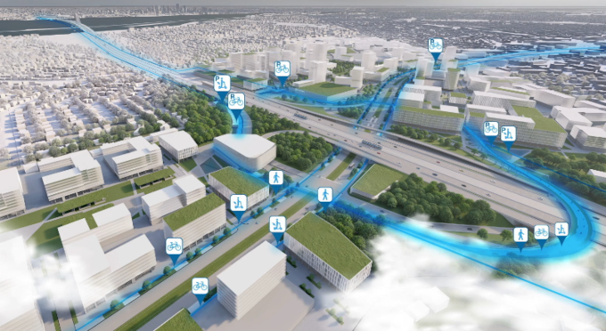
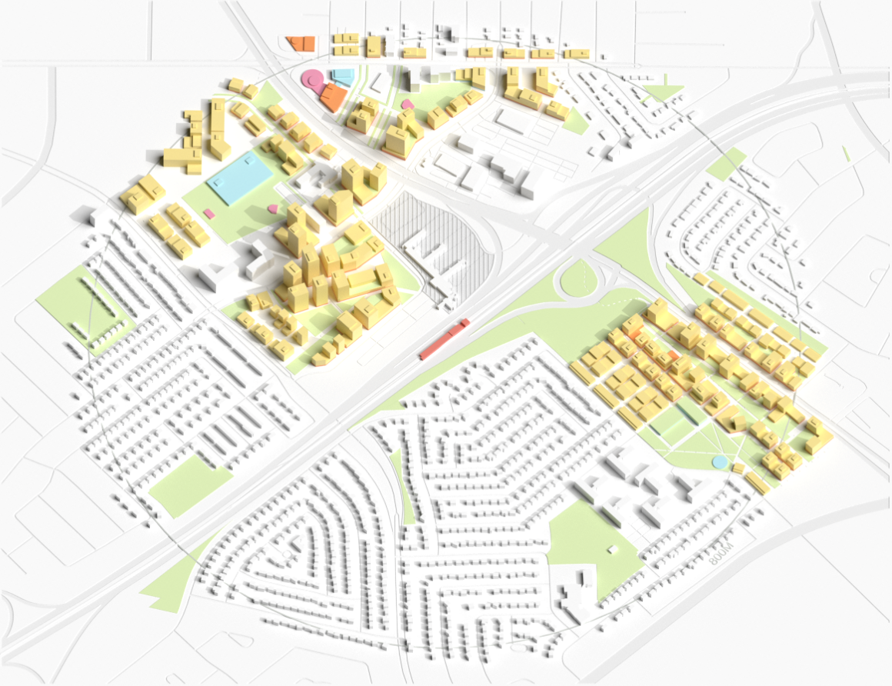

Comment un aménagement stratégique, des investissements dans les infrastructures civiques et une planification inclusive peuvent-ils transformer un terminus de banlieue en une communauté dynamique axée sur les transports en commun ?
Animation Frame 1: alt
Description: La station Panama, récemment inaugurée dans la ville de Brossard, devrait jouer un rôle moteur dans le développement du Grand Montréal.
Animation Frame 2: alt
Description: Elle se trouve au cœur d'un projet d'aménagement d'ensemble axé sur les transports en commun (Transit-oriented development - TOD), unique au Canada, qui prévoit des constructions de hauteur moyenne, de nombreux espaces verts, et met l'accent sur la qualité de vie, dans une zone susceptible de connaître une forte demande du marché en matière de développement résidentiel au cours des prochaines décennies.
Animation Frame 3: alt
Description: Cependant, des études menées dans d'autres aires TOD en Amérique du Nord montrent qu'il est très difficile de densifier des zones de banlieue sans accorder une attention particulière à la mise en œuvre.
Cette étude de cas examine comment concrétiser la vision globale de Brossard en matière de développement communautaire tout en veillant à ce que celle-ci reste abordable et inclusive.
Il s’agit de l’une des cinq études de cas réalisées par l’Infrastructure Institute et la School of Cities cherchant à identifier différents types d’aires TOD à travers le Canada et à explorer les opportunités et les compromis liés à la création de communautés dynamiques à proximité de transports en commun. Dans chaque cas, nous examinons les plans actuels et les modèles de croissance, puis nous projetons à quoi pourrait ressembler cette communauté dans 20 à 30 ans si son développement se poursuivait de cette manière (l’ « évolution actuelle »). Nous présentons ensuite un scénario alternatif « optimisé » qui envisage des changements susceptibles de relever les défis courants. Nous nous appuyons pour cela sur les principes d’une aire TOD considéré de haute qualité : la densité, la mixité des usages du sol et une conception de haute qualité (les « 3D » en anglais: density, diverse mix of land uses, high-quality design).
Nos rendus de la zone autour de la station constituent des exercices hypothétiques visant à comprendre à quoi pourrait ressembler le projet dans différents types de contextes urbains, sur la base du zonage et des plans communautaires existants. Ils ne sont pas destinés à servir de lignes directrices contraignantes pour des propriétés ou des quartiers spécifiques. Ces modèles explorent les possibilités qui existent – ce que les études actuelles suggèrent comme étant des moyens efficaces d’augmenter la densité résidentielle et de mettre en place les infrastructures nécessaires à la création de communautés de qualité. Mais les communautés doivent être planifiées par et pour les personnes qui y vivent. Nous proposons cette analyse afin de susciter une réflexion sur ce qui est possible.
Présentation du quartier
Située sur la rive sud de Montréal, Brossard est une ville de banlieue en pleine expansion qui compte près de 100 000 habitants. La station Panama était depuis longtemps desservie par une ligne de bus vers Montréal, mais l’ouverture de la ligne ferroviaire du Réseau express métropolitain (REM) en 2023 a changé la donne. Dans une région asphyxiée par les embouteillages, le REM représente un investissement de 7 milliards de dollars dans la mobilité, offrant ainsi l’opportunité d’accompagner la croissance là où cela s’avère le plus judicieux : à proximité d’un réseau de transport rapide et fréquent. À seulement 15 minutes de Montréal, la station Panama est au cœur d’un plan ambitieux mis en œuvre par la Ville pour créer un nouveau centre-ville à Brossard, une destination emblématique offrant de nombreux logements, des espaces verts et des équipements. [1]
Aujourd’hui, les terrains situés à proximité immédiate de la station Panama sont occupés par des parkings et des sites commerciaux sous-exploités, tandis qu’une communauté résidentielle bien établie et à faible densité s’étend en périphérie. Il s’agit principalement de maisons individuelles et de quelques immeubles à appartements de faible hauteur, dont près de 85 % ont été construits avant 1990. Près de 40 % des habitants sont locataires, un taux bien supérieur à celui du reste de la ville, et les revenus des ménages sont inférieurs à la moyenne municipale.
Deux axes routiers provinciaux – l’autoroute 10 et le boulevard Taschereau – traversent le site, isolant ainsi les différentes parties du quartier les unes des autres. Un ensemble de tours de bureaux et un centre commercial vieillissant se trouvent à la limite nord de la zone de la station, séparés par un vaste parking. Plus de 70 % des navetteurs se déplacent en voiture.
Brossard est un point d’atterrissage pour les nouveaux Canadiens, et les 5 300 habitants du quartier de la gare forment une population hétérogène : près de la moitié sont des immigrés et 60 % appartiennent à des minorités visibles. De nombreuses familles vivent dans le quartier, ainsi qu’une importante population de personnes âgées. Bien que le quartier dispose de certains des éléments qui font une collectivité viable – écoles, supermarchés et services de santé – leur accessibilité est généralement faible, et le quartier aura besoin d’investissements importants tant dans les infrastructures matérielles que sociales pour suivre le rythme de la croissance.
Sources des données : Statistique Canada, Environics Analytics (2024).
Le projet de la Ville visant à créer un nouveau centre-ville animé sur ce site est passionnant et, s’il est mené à bien, pourrait donner naissance à une collectivité viable dynamique.
L’évolution actuelle de Panama
Après plusieurs années de planification et de consultation publique, le conseil municipal de Brossard a approuvé en 2024 son plan « Nouveaux Centre-Ville ». [2] Le plan d’aménagement, ou Projet particulier d’urbanisme (PPU), couvre un tronçon de 2,5 kilomètres reliant, à une extrémité, le centre commercial Mail Champlain (715 000 pieds carrés) et, à l’autre, l’hôtel de ville et la bibliothèque principale. La station Panama se trouve au milieu de ce tronçon et constitue la zone qui devrait connaître le développement le plus intense. Le plan prévoit des immeubles de grande hauteur pouvant atteindre 35 étages à proximité immédiate de la station, avec une gradation progressive dans les zones environnantes, la hauteur des bâtiments diminuant progressivement pour atteindre des immeubles de moindre hauteur (3 à 8 étages) en périphérie.
Le projet de la Ville pour le réaménagement du quartier de la gare prévoit de larges esplanades et des espaces publics emblématiques.Ville de Brossard, 2025.
Parmi les éléments clés du projet figurent de larges esplanades et des espaces publics agrémentés de fontaines et d’œuvres d’art ; des voies piétonnes reliant les grandes artères et rendant les vastes parcelles plus accessibles à pied ; ainsi que des espaces dédiés aux équipements sportifs et culturels. Un grand parc central s’inspire du parc Clichy-Batignolles-Martin Luther King à Paris, et les objectifs en matière d’espaces verts pour chaque site augmentent à mesure que l’intensité de l’aménagement s’accroît. Une boucle active (active loop) reliera les différents secteurs du quartier grâce à des pistes cyclables et des chemins piétonniers qui serpentent au-dessus et en dessous des autoroutes. [3]

Un projet de boucle active de pistes cyclables et sentiers piétonniers permettra de relier à nouveau le quartier.Ville de Brossard, 2025.
Le boulevard Taschereau, axe majeur de la Rive-Sud reliant Brossard à la ville voisine de Longueuil, traverse le secteur de la gare et est au cœur de ce réaménagement infrastructurel. Un plan de réaménagement de 500 millions de dollars prévoit que ce corridor soit également aménagé selon les principes du TOD, notamment en mettant l’accent sur une densité de construction de hauteur moyenne et sur une ligne de bus à haut niveau de service (BHNS) reliant la station Panama au métro de Longueuil. [4] Pour mettre en place cette infrastructure, les deux villes s’associeront à la province de Québec et au service régional de transport en commun.
La revitalisation résidentielle et commerciale en cours du boulevard Taschereau permettra d'augmenter la densité de population et de créer des voies réservées aux bus.Ville de Brossard, 2025.
Bien que l’approbation du plan d’aménagement du centre-ville soit relativement récente, la Ville prépare le terrain pour ce projet depuis plusieurs années. Brossard fait partie des rares zones de gare le long du REM à avoir mis en place des modifications réglementaires favorisant le TOD, notamment un rezonage autorisant les logements collectifs, une augmentation de la hauteur maximale des bâtiments et une réduction significative des quotas minimaux de places de stationnement. [5]
Fin 2025, la Ville a approuvé le premier projet immobilier du quartier : un immeuble résidentiel de 30 étages comprenant, au rez-de-chaussée, des bureaux, des espaces de coworking et des commerces de proximité. [6] Près d’un tiers du site est consacré aux espaces publics, dont 17 % sont réservés aux espaces verts. [7]
Scénario optimisé : concrétiser le projet
Le projet concernant la station Panama et ses environs est novateur et visionnaire ; il intègre nombreuses des meilleures pratiques des aires TOD et a récemment été récompensé par un prix international. [8] Il propose également des niveaux de densité globale inférieurs à ceux de nombreux TOD dans de grandes agglomérations, avec l’intention explicite de créer un TOD à « échelle humaine », et prévoit principalement des constructions de faible à moyenne hauteur en dehors des zones immédiatement adjacentes à la station. Ce projet est le fruit d’une vaste consultation publique et d’une évaluation sans concession de la capacité des infrastructures de la ville.

Yet these decisions will involve trade-offs. Some larger parcels will not achieve maximum density build out, which may discourage investment and slow the pace of development, and which also lowers potential tax revenues from new residences. [9] Development charges to pay for parks and public spaces and the standard REM taxes levied next to stations also add to the cost of construction in a slowing market. The risk is that development stalls, never achieves its full potential, or is hampered by delays from speculation. The optimized scenario explores how to encourage early investment and prioritize social infrastructure to create a vibrant and inclusive community.
RECOMMENDATION 1:
Réévaluer au fil du temps quel niveau de densité permettra de soutenir le commerce de proximité et les équipements collectifs
Le plan de la ville tient compte du caractère de banlieue actuel et de la capacité des infrastructures du quartier, ainsi que du fait que la plupart des Brossardois s’installent dans la région à la recherche d’une densité de construction faible à moyenne. La vision que le plan présente respecte ces préférences tout en proposant une augmentation significative par rapport aux niveaux de densité d’une ville nord-américaine typique. Le plan s’inspire d’un modèle européen polycentrique, à l’image de Paris et de Barcelone, qui se caractérise par des quartiers compacts de moyenne hauteur plutôt que par des centres denses s’étendant vers l’extérieur. [10] Bien qu’il n’existe pas de formule pour déterminer la densité optimale, les villes doivent trouver un équilibre entre la proximité des commerces et des services et la nécessité d’une population suffisante pour garantir la viabilité économique de ces équipements. [11]
Les quartiers compacts de hauteur moyenne, comme à Barcelone, offrent une densité suffisante pour permettre le développement d'un tissu commercial et de services de proximité dynamiques.Archie McNicol, 2023.
En matière de commerce de détail, le plan prévoit d’importants espaces dédiés aux commerces locaux le long des artères commerçantes. Cependant, ceux-ci pourraient avoir du mal à rivaliser avec l’offre commerciale existante à Brossard, notamment en raison de la présence du centre commercial Champlain au sein même de la zone du projet, ainsi que du Quartier DIX30, le plus grand centre commercial en plein air du Canada avec ses trois millions de pieds carrés, situé à seulement quatre kilomètres (un arrêt de REM). Il pourrait s’avérer nécessaire de réduire l’espace consacré au commerce de détail afin d’éviter les locaux vacants. [12] Le zonage et les superficies pourraient devoir être adaptés pour accueillir des locataires clés, notamment dans les secteurs du commerce de détail, de l’administration publique ou des institutions. Nous avons agrandi ces espaces afin qu’ils servent de repères culturels donnant une orientation et un sens au site. [13]
RECOMMENDATION 2:
Investir dans des infrastructures importantes et des espaces publics afin de stimuler le développement dès les premières phases
Notre scénario optimisé suggère également de réorienter une partie des devantures commerciales prévues vers des « devantures civiques » intégrant davantage d’infrastructures sociales dès le départ, la Ville jouant un rôle moteur dans l’occupation de ces espaces. Un mélange de cliniques, de bibliothèques et de lieux culturels pourrait coexister avec des magasins et des cafés, offrant ainsi une mixité d’usages plus nuancée qui soutiendrait la communauté diversifiée et multiculturelle du quartier. Alors que le plan repositionne la station Panama comme le nouveau centre-ville de Brossard, l’implantation d’équipements collectifs à cet endroit, même au-delà des exigences actuelles, pourrait attirer des piétons vers les crèches, les cliniques de santé et les nouveaux services d’aide canadiens de la région, ce qui stimulerait la fréquentation des transports en commun.
Les infrastructures peuvent constituer une condition préalable au réaménagement et contribuer à un cercle vertueux de croissance, dans lequel les entreprises et les habitants s’installent à proximité des transports en commun, des parcs et des équipements collectifs. Cependant, les grands projets qui profiteront à l’ensemble des habitants ne devraient pas incomber principalement au secteur privé. Plusieurs projets de TOD couronnés de succès ont eu recours à un zonage de district spécial pour lancer ce processus grâce au financement par augmentation d’impôt, qui peut également servir à financer les travaux d’urbanisme et à subventionner le logement abordable. [14]
Un investissement dans les infrastructures sociales : le Centre multigénérationnel de Brossard a ouvert ses portes en 2025 et est accessible en quelques minutes de bus depuis la station Panama.Ville de Brossard, 2025..
La Ville a préparé le terrain grâce à des investissements dans son plan triennal de travaux d’équipement, notamment en prévoyant dans son budget 2026 des fonds destinés à l’extension du réseau d’assainissement et à la rénovation d’infrastructures sociales telles que les piscines municipales et un nouveau centre multigénérationnel. Le plan de l’aire TOD suggère que la Ville pourrait également acquérir ou exproprier des terrains destinés à des espaces publics si les propriétaires privés en demandent un prix trop élevé. À titre de mesure complémentaire, la Ville pourrait également envisager le regroupement de terrains – en combinant des parcelles adjacentes pour former des sites plus vastes – afin de faciliter un développement coordonné et d’accroître la faisabilité de projets à plus forte densité. Parmi les autres leviers municipaux figurent l’octroi de crédits d’impôt plus élevés aux premiers promoteurs immobiliers et la mise en place d’une taxe sur des zones spécifiques (par exemple, les terrains vacants ou les parkings, afin de décourager la spéculation sur les zones proches des pôles d’attractivité et de contribuer à accélérer le réaménagement). [15]
Avec un plan solide en place, soutenu par des modifications du zonage municipal et un intérêt précoce du marché, le moment est venu pour les autres niveaux de gouvernement d’apporter leur soutien. Afin d’éviter que les premiers projets ne s’enlisent en raison de frais d’aménagement élevés, la province, voire le gouvernement fédéral, pourraient intervenir en apportant un financement de contrepartie pour les grandes infrastructures favorisant la construction de logements. Les programmes régionaux, provinciaux et fédéraux peuvent stimuler la croissance grâce à des investissements dans le domaine public, afin de rendre cet endroit encore plus attractif pour les investisseurs.
RECOMMENDATION 3:
Privilégier l'accessibilité financière et l'inclusion
Le quartier Panama est actuellement l’un des quartiers les plus abordables de Brossard, mais ayant une forte proportion de locataires et de personnes âgées disposant de revenus fixes, il présente un risque élevé d’éviction. Les habitants les plus susceptibles de bénéficier d’une amélioration des transports en commun et de nouveaux équipements – notamment les ménages à faibles revenus, les personnes âgées et celles qui ne conduisent pas – sont également les plus exposés au risque d’être chassés par la hausse des prix si des mesures de protection ne sont pas mises en place dès le départ. Les équipements proposés, les espaces publics et l’accès facile aux transports en commun risquent d’augmenter la valeur foncière dans le quartier – comme c’est souvent le cas dans les TOD réussis –, ce qui pourrait contraindre les habitants actuels à se tourner vers d’autres quartiers moins chers. [16]
Le plan de la ville prévoit un barème dégressif – recommandant que les logements abordables soient répartis dans l’ensemble du projet et qu’ils représentent jusqu’à 15 % dans les zones à plus forte densité –, mais il n’existe aucune exigence minimale au niveau municipal ou régional. [17] Cela risque d’entraîner la construction précoce de logements trop chers pour répondre aux besoins de la population et (comme c’est souvent le cas avec les TOD) trop petits pour les familles, surtout s’ils remplacent des logements locatifs naturellement abordables existants, qui constituent souvent le premier parc immobilier à disparaître lors d’un réaménagement.
Une approche plus efficace consiste à mettre l'accent sur l'accessibilité financière. Donner la priorité à la construction de logements abordables, voire sociaux, permettrait aux habitants actuels de rester dans le quartier à mesure que le projet avance, plutôt que d'être contraints de déménager vers des quartiers éloignés et mal desservis par les transports en commun. [18]
Afin d’éviter le déplacement forcé des personnes âgées, certaines villes ont collaboré avec les communautés locales pour recenser les immeubles abritant un grand nombre de résidents âgés, et ont mis en place des aides financières ciblées pour contribuer à leur entretien. [19] Il sera également essentiel de continuer à répondre aux besoins de la population âgée grâce à des équipements collectifs, des commerces et d’autres espaces leur permettant de participer à la vie de la communauté au fur et à mesure de son évolution. Il s’agit notamment d’espaces publics tels que des centres communautaires et des bibliothèques, mais aussi d’espaces commerciaux favorisant les interactions. [20] Leur implantation le long d’artères piétonnes peut encourager une fréquentation et une participation accrues. Veiller à une mixité entre logements et commerces – en particulier les épiceries, cafés et restaurants – dans toutes les gammes de prix peut favoriser l’inclusion. [21]
Brossard est à l’aube d’une transformation majeure, portée par l’accès aux transports en commun et un nouveau plan d’aménagement visionnaire pour le centre-ville. Pour concrétiser ce projet, il faudra des investissements importants dès le début afin de déclencher des changements positifs, ainsi qu’un suivi rigoureux pour garantir que le réaménagement reste inclusif et ne s’enlise pas. En intégrant des fonctions civiques et culturelles et en mettant l’accent sur l’accessibilité financière dans un plan déjà solide, la gare de Panama pourra passer du statut de pôle de mobilité à celui de quartier viable.
Recherche et rédaction: Sarah Chan, Kathryn Exon Smith, Anika Reisha Taboy Conception et développement: Daniel Lam, Phat Le Cartes et visualisation des données: Isabeaux Graham, Jeff Allen Développement web: Mieko Yao, Jeff Allen Autres contributeurs: An Pham, Carrie Zeng Traduction: Emma Ezvan ~ mars 2026
Aryana Soliz et al., “Getting into the Zone: What Can Municipal Bylaws Tell Us about Transit-Oriented Development in Montreal, Quebec?,” paper presented at 102nd Transportation Research Board Annual Meeting, 2023, URL; Ville de Brossard, “Plan particulier d’urbanisme du centre-ville,” p. 61
Alexandre Fleurent, Recension et analyse des stratégies et des instruments municipaux favorisant l’abordabilité en habitation : Rapport de projet en organisation (2024), URL
João F. Bigotte and António P. Antunes, “Social Infrastructure Planning: A Location Model and Solution Methods,” Computer-Aided Civil and Infrastructure Engineering 22 (2007): 570–83, DOI
Leah Brooks and Rachel Meltzer, “Retail on the Ground and on the Books: Vacancies and the (Mis)Match Between Retail Activity and Regulated Land Uses,” Journal of the American Planning Association 91, no. 2 (2025): 192–206, DOI
Julie Mah, “Broadening Equitable Planning: Understanding Indirect Displacement through Seniors’ Experiences in a Resurgent Downtown Detroit,” Environment and Planning A: Economy and Space 55, no. 4 (2023): 905–22, DOI
Helena Hollis et al., Social Infrastructure: International Comparative Review (Institute for Community Studies & Bennett Institute for Public Policy, 2023), URL